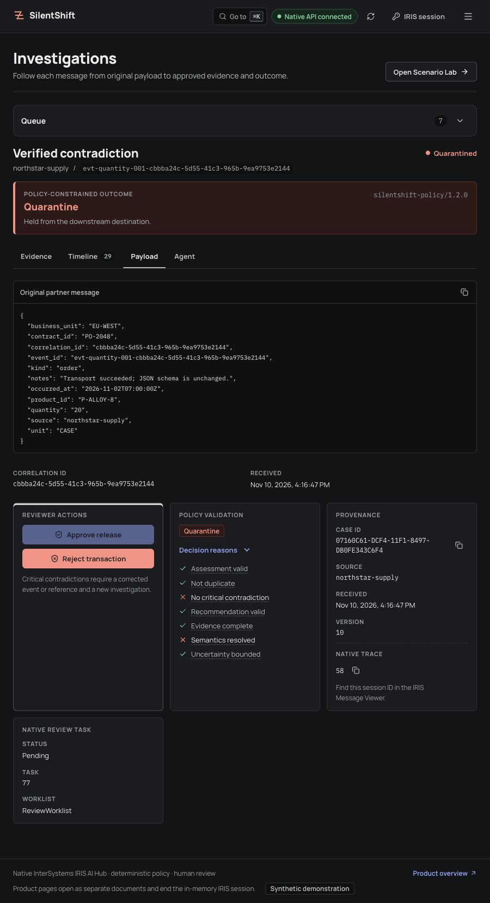
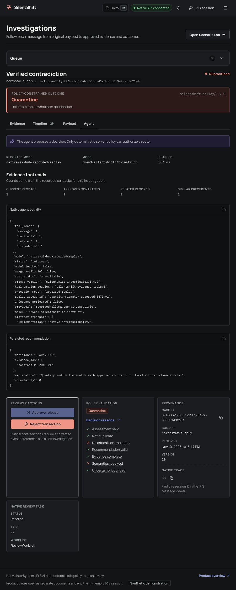
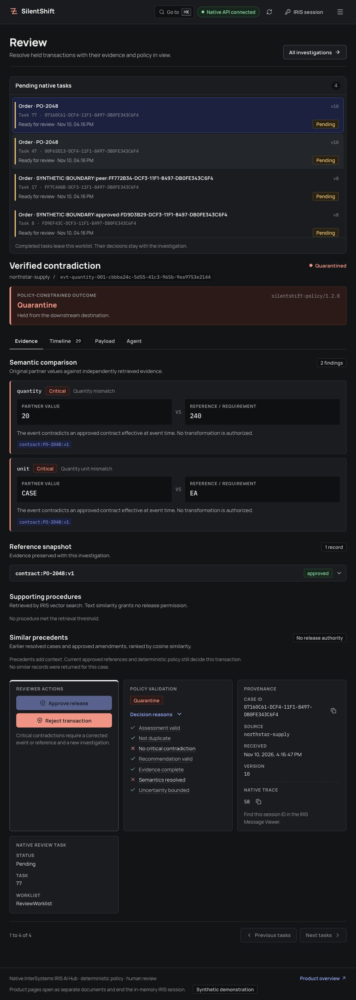
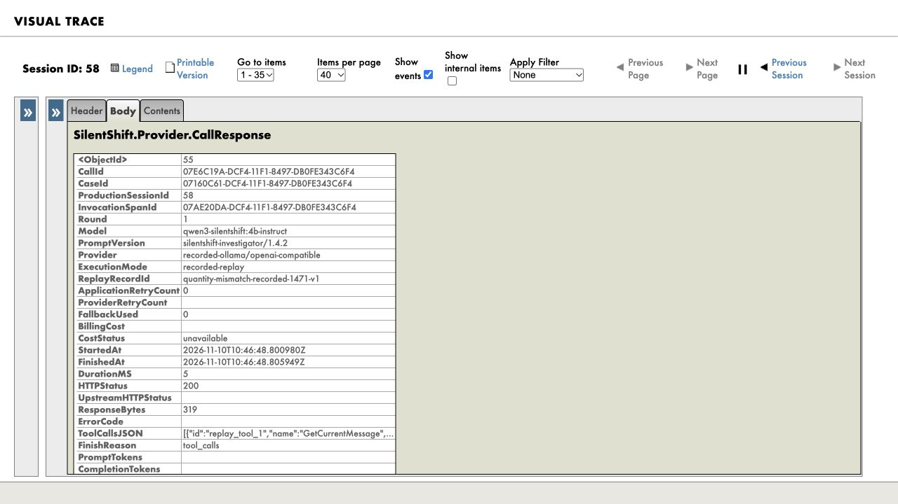

Evidence stays independent
An incoming CSV order cannot approve its own contract. The reference source is separate, and importing it requires explicit authorization.
For B2B integration operations
SilentShift catches changes in business meaning before delivery. An IRIS AI Hub agent investigates the evidence; deterministic policy decides what happens next.
Synthetic orders · IRIS destination simulator · Recorded evidence
Start here
Watch the original captioned demonstration, then inspect the real case records below.
This recording predates the CSV workbench and newer source interface. It shows synthetic cases and simulator delivery.
Native IRIS interoperability
Each investigation stays inside the business workflow, with the original order, independent references, recommendation and route available for inspection.
A Business Service accepts the order and preserves its original payload.
The Business Process retrieves independently approved references and assesses the business fields.
The native AI Hub agent reads case-scoped evidence and proposes a recommendation.
Deterministic policy checks the proposal, citations and contradictions. Missing evidence never grants release.
Operations hold or deliver to the simulator. Eligible holds create native Workflow tasks.
An incoming CSV order cannot approve its own contract. The reference source is separate, and importing it requires explicit authorization.
A written reason, current case version and idempotency key are required. Critical contradictions cannot be approved.
Provider request/response messages appear in the case’s Visual Trace, alongside routing and human-review steps.
Inspect the product
These are recorded local captures, not an interactive hosted app. Open any image to inspect its full resolution.

November 10 local source capture, session 58. Synthetic recorded replay; no fresh inference. Open the image for full resolution.
November 10 local source capture, session 58. Synthetic recorded replay; no fresh inference. Open the image for full resolution.

November 10 local source capture, session 58. Synthetic recorded replay; no fresh inference. Open the image for full resolution.

November 10 local source capture, session 58. Synthetic recorded replay; no fresh inference. Open the image for full resolution.

November 10 local source capture, session 58. Synthetic recorded replay; no fresh inference. Open the image for full resolution.
Reproduce it locally
After the prerequisites in the installation guide, run the recorded example without a model or provider key.
Open the single installation guide./scripts/judge-replay.shchecks=12/12; passed=true
routing=QUARANTINED
delivery_count=0The launcher prints a session ID and Visual Trace URL.
Bring the official image. The verified local target is IRIS Community AI Hub 2026.3.0AI.154.0 / 154U ARM64. Obtain the EAP image from InterSystems yourself; it is not redistributed here. Other builds and architectures are not claimed tested.
Know which version you’re reading. Public native IPM and OEX are 0.3.0; React is separately versioned 0.2.1. Source-branch work is not a new public package. The replay checks the public native package, not every unpublished source change.
Go deeper
The problem, native agent and deterministic boundary.
Developer CommunityThe durable task, version check and simulator receipt.
All supplied orders are synthetic, and delivery is simulator-only. There is no hosted native demo or real ERP connection. The completed v2 held-out evaluation did not show an overall correct-routing gain or better unstructured routing; later pipeline work is not evidence of a measured improvement. Technology-bonus qualification and awards remain for the organizers to decide.